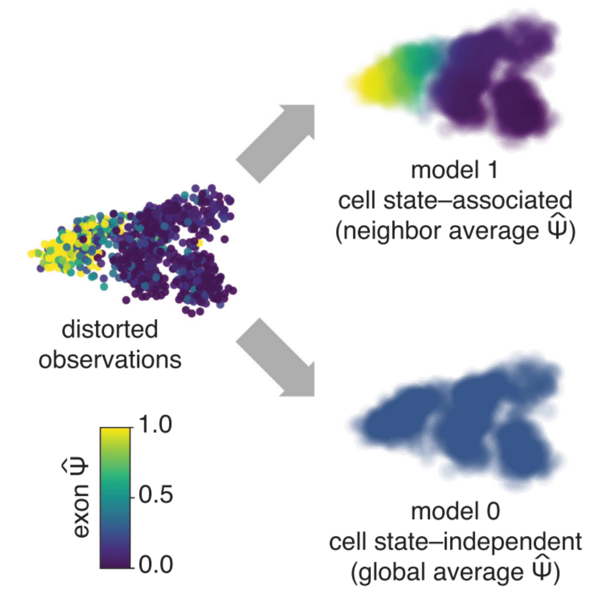

Carlos F Buen Abad Najar
I am a Postdoctoral Scholar at the Li and Stephens labs at the Section of Genetic Medicine of the University of Chicago. I combine genomics and computational methods to study the genetic and molecular mechanisms that govern RNA regulation. I am particularly interested in how RNA processing impacts gene expression and its role in human disease.
I earned my Ph.D in Computational Biology at UC Berkeley advised by Drs Liana Lareau and Nir Yosef. Before that, I got my Bachelor' Degree in Biology at the National Autonomous University of Mexico.
Research highlights |

|
Reference-free analysis of mRNA isoform variation in large-scale RNA-seq datasets.
Carlos F Buen Abad Najar, Dongyue Xie, Peter Carbonetto, Ru Feng, Gao Wang, Matthew Stephens, Yang I Li In prep, 2024 preprint Torino combines an innovative matrix factorization approach with splice junction analysis to uncover the main structures underlying the transcriptome without annotations. Torino finds thousands of new transcript structures relevant in complex diseases, such as cryptic splicing, intron retention and alternative polyadenylation. |

|
Global impact of unproductive splicing on human gene expression.
Benjamin J. Fair*, Carlos F. Buen Abad Najar*, Junxing Zhao, Stephanie Lozano, Austin Reilly, Gabriela Mossian, Jonathan P. Staley, Jingxin Wang & Yang I. Li * indicates equal contribution. Nature Genetics, 2024 paper Alternative splicing leading to NMD-targeted mRNAs is widespread across the transcriptome. This unproductive splicing impacts gene expression levels and it is an important link between genetic variants, eQTLs and complex traits. |
|  |
Identifying cell state–associated alternative splicing events and their coregulation.
Carlos F Buen Abad Najar, Prakruthi Burra, Nir Yosef^, Liana F Lareau^ ^ indicates co-corresponding authors. Genome Research, 2022 paper / code Psix finds patterns of alternative splicing and splicing corregulation across a phenotypic landscape of single cells. |

|
Coverage-dependent bias creates the appearance of binary splicing in single cells.
Carlos F Buen Abad Najar, Nir Yosef^, Liana F Lareau^ ^ indicates co-corresponding authors. eLife, 2020 paper / code Previous studies have reported that single-cell alternative splicing is binary: most cells produce either one isoform or the other, but rarely both. We found that the low-capture efficiency of scRNA-seq methods accounts for most of this pattern. In reality, single-cells can produce multiple isoforms from the same gene; we are just missing most of them experimentally. |